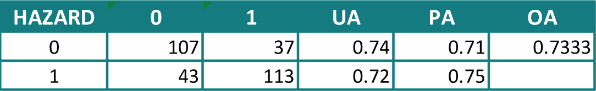
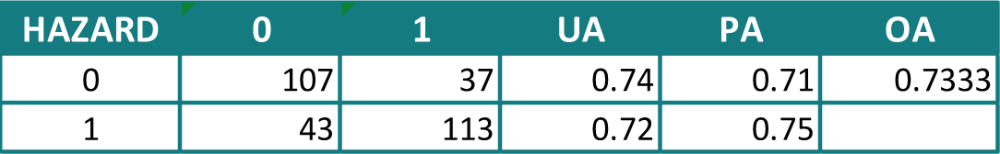

Results
This section will present the main outcomes and results of the analysis, in particular regarding the Susceptibility Maps and the Exposure Assessments.
1. Susceptibility maps results
Once the first susceptibility map is created, we need to validate the result. In order to do so, a validation script through R is performed. To run the script, we need to reclassify the susceptibility map layer into 2 simple classes, 0 and 1. All the pixels falling in the 0 - 0.5 range will be a 0, which means no hazard, while all those falling in the 0.5 - 1 range will be a 1, so hazard. The process compares this new layer with the testing points layer that was created earlier and returns an accuracy level.
 

The overall accuracy is 0.73, a pretty low value that can be increased. In order to do so, we can try to increase the number of training points that are used to create the susceptibility map, so that the level of detail of the information will be higher.
Points increased at 2,000
The first attempt is to increase the overall number of points from 1,000 to 2,000, keeping the 30:70 ratio, so that the training points will be 1,400 and the testing points 600. We run the script again and then validate the result.

The overall accuracy is increased by 0.1 points till 0.83, which seems a way better result, considering it's enough above 0.8 and had a huge jump in relation to the 1,000 points version. Some possible explanations for this big change will be discussed later on in this section.
2. Exposure assessment results
The last step is to assess how many elements of the territory are exposed to the landslide susceptibility levels we just obtained. A first element to evaluate is how much of the population is exposed. The raster data of 2020 population aggregate according to the four classes returns these results.
Since both the 1,000 and 2,000 point layers results are presented, we can visualize how the values change in the two versions. In particular, it seems that in the second version the amount of people living in the "Low" class increases. This is mainly related to how the 2,000 points version represents the densely urbanized area of Aprica.
Buildings assessment
A second element that has been assessed is the presence of buildings in the four classes. The workflow is slightly different since the buildings layer of Geoportale Regione Lombardia is a vector dataset. For this reason, as a rule, it was considered the highest level of lanslide susceptibility on which each geometry was located and then the statistics on the buildings layer were computed.
In this case, the differences between the 1,000 and 2,000 points versions are not so evident, while it's very clear how both results differ from the population ones. While the population falling in the highest classes was almost not present, in this case we do have some buildings that are located in areas with "High" or also "Very High" landslide susceptibility levels. The intuitive reason for this is that there are some buildings in the south area of the valley near the lake, but they are not inhabited.
3. Final considerations
In this last section some final considerations will be discussed, regardings the limits of the model, the errors faced and the approximations applied.
-
There are some limits and hard approximations that are always present in this analysis. Some of them were already stated, for example the limit of considering only Hazard (1) and no Hazard(0) area both in the training and testing points and so in the creation and validation of the susceptibility maps.
-
Some problems were faced during the elaborations, in particular all those issues related to layers projection, extention and resolution. Since the model requires that the three components must be the same for each of the environmental factors, this led to some geometrical approximations and light distorsion, expecially because the layers had non homogeneous sources.
-
More detailed issues regarded the creation of the Susceptibility maps, which even in the final version present some blank areas. The first "blank area" issue was caused by the slope and the aspect layers. These layers had some "nodata" areas, always very flat ground areas, such as a part of the Aprica valley urbanization. In that case the error was corrected before running the model, appling 0 values to those NULL areas. The blank areas that are still visible are casued by the "12" DUSAF code, the "Productive areas", that the model seems to ignore.
-
Some final considerations about the analyzed portion of territory need to be stated. As we can evaluate even from a direct view of the satellite, the urbanization is all concentrated in the north valley of Aprica and this led to big variations in the assessment results, as already stated. In addition to that, some "hard" elements are present in the area, for example the ski slopes of Aprica or the small lakes as well as the Belviso one, which, depending on how the susceptibility level is computed, may cause big variationsmay cause big variations also in the validation exercise that was carried out after the maps creation.